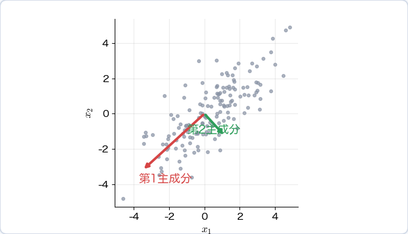
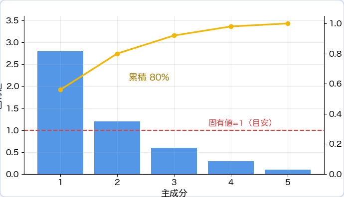
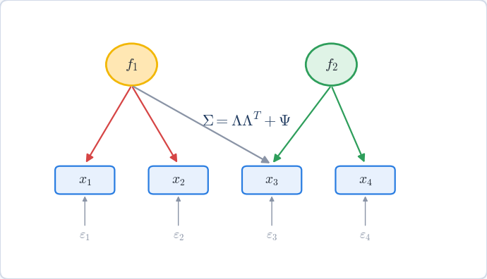
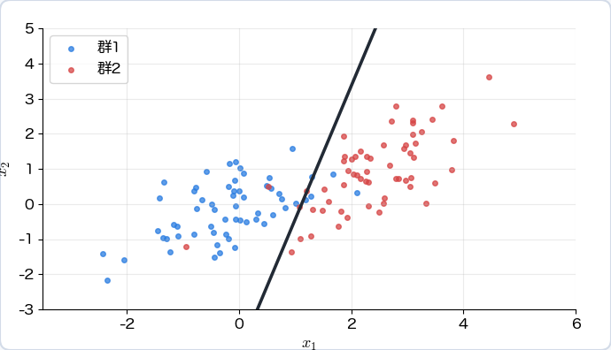
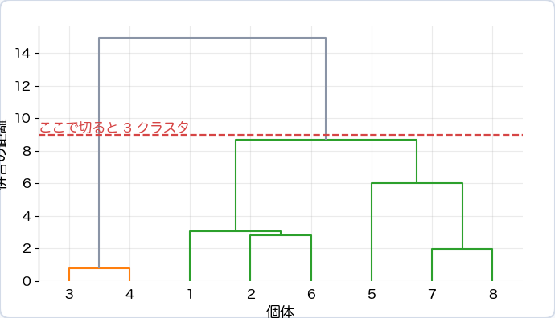
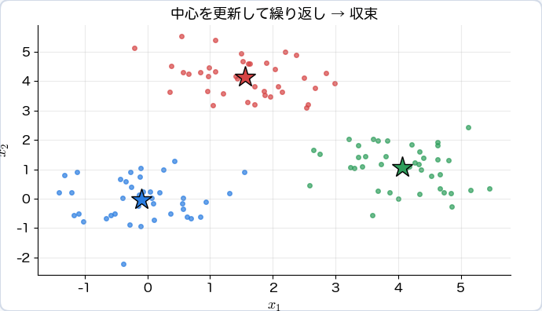
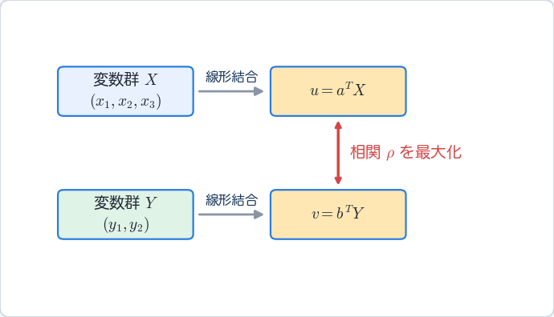
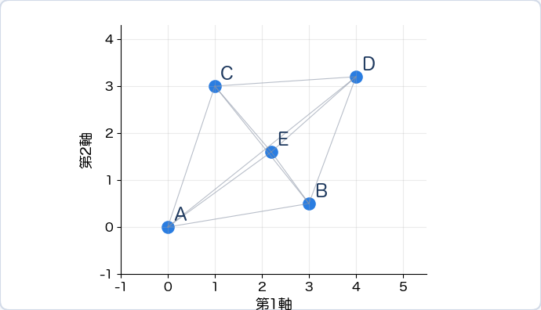

第12回 多変量解析
この回の学習目標
- 主成分分析を固有値分解として理解し、寄与率を計算できる
- 因子分析・判別分析・正準相関分析・MDS の考え方と式を説明できる
- 階層的クラスタリングの連結法と k-means 法の手順を説明できる
1. 主成分分析（PCA）
多数の変数を、情報をなるべく失わずに少数の合成変数（主成分）にまとめる方法です。第 1 主成分は データの分散が最大になる方向 $a_1$（$\|a_1\|=1$）です。
$$\max_{\|a\|=1}\ V[a^TX]=a^T\Sigma a$$
この解は分散共分散行列 $\Sigma$ の 最大固有値に対応する固有ベクトル、そのときの分散が固有値 $\lambda_1$ です。第 2 主成分は第 1 主成分と直交する方向の中で分散が最大のもの（$\lambda_2$ に対応する固有ベクトル）、…と続きます。主成分どうしは無相関です。

2. 寄与率と解釈
$$\text{寄与率}=\frac{\lambda_k}{\sum_j\lambda_j},\qquad\text{累積寄与率}=\frac{\sum_{j\le k}\lambda_j}{\sum_j\lambda_j}$$
- 使う主成分の数の目安：累積寄与率 80% 程度、または固有値が 1 以上（相関行列のとき）。固有値を大きい順に並べた図が スクリープロット
- 単位が異なる変数は標準化して 相関行列 から主成分を求める（このとき固有値の合計は変数の数 $p$）
- 主成分と元の変数の相関（因子負荷量）で、各主成分の意味を解釈する

3. 因子分析
観測変数の背後にある 共通因子 を考えるモデルです。
$$X=\Lambda f+\varepsilon,\qquad\Sigma=\Lambda\Lambda^T+\Psi$$
（$\Lambda$：因子負荷量行列、$f$：共通因子、$\varepsilon$：独自因子、$\Psi$：独自分散の対角行列。）
- 主成分分析は「変数から合成変数を作る」、因子分析は「変数が因子から生じる」というモデル
- 因子は回転しても $\Sigma=\Lambda\Lambda^T+\Psi$ が変わらない（不定性）ので、解釈しやすいようにバリマックス回転（直交）やプロマックス回転（斜交）を行う

4. 判別分析
あらかじめ群が分かっているデータから、新しい個体の群を判別します。各群が 等しい共分散行列 の正規分布に従うと仮定すると、判別の方向は
$$w=\Sigma^{-1}(\mu_1-\mu_2),\qquad\text{境界：}\ w^T\left(x-\frac{\mu_1+\mu_2}{2}\right)=0$$
（線形判別分析）。$w^T(x-m)>0$ なら群 1 に判別します。共分散が群ごとに異なると境界が曲線になり、二次判別分析 を使います。誤判別率は交差検証で評価します。

5. 階層的クラスタリング
群が未知のデータを、似たもの同士で分けます。近い個体（クラスタ）から順に併合し、結果を デンドログラム（樹形図） で表します。クラスタ間の距離の測り方（連結法）：
| 連結法 | クラスタ間距離 |
|---|---|
| 単連結（最短距離法） | 最も近い点どうしの距離（鎖状につながりやすい） |
| 完全連結（最長距離法） | 最も遠い点どうしの距離 |
| 群平均法 | すべての点対の平均距離 |
| ウォード法 | 併合による平方和の増加が最小になる組を併合 |
ある高さでデンドログラムを切るとクラスタが決まります。

6. k-means 法
クラスタ数 $k$ を先に決める非階層的な方法です。
- 適当な $k$ 個の中心を置く
- 各点を最も近い中心に割り当てる
- 各クラスタの重心に中心を更新する
- 2, 3 を変化がなくなるまで繰り返す
クラスタ内平方和は単調に減少しますが 局所解 に陥るため、初期値を変えて複数回実行します。$k$ の決め方：エルボー法、シルエット係数。

7. 正準相関分析
2 組の変数群 $X$, $Y$ から、それぞれの線形結合 $u=a^TX$, $v=b^TY$ を作り、その相関が最大 になるようにします。第 1 正準相関が最大の相関で、次の組は以前の組と無相関という条件で順に求めます。正準相関係数の二乗 は、共分散行列から作る行列 $\Sigma_{XX}^{-1}\Sigma_{XY}\Sigma_{YY}^{-1}\Sigma_{YX}$ の固有値に等しくなります。重回帰（目的変数が 1 つ）の拡張です。

8. 多次元尺度構成法（MDS）
個体間の 距離（非類似度）の情報だけ から、低次元の配置（地図）を求めます。古典的 MDS は距離行列から内積行列（二重中心化）を作って固有値分解します。ユークリッド距離ならば主成分分析と同じ結果になります。向きや反転は決まりません。

演習問題
演習1 主成分分析
問題 共分散行列が $\begin{pmatrix}4&2\\2&3\end{pmatrix}$ のとき、固有値と第 1 主成分の寄与率を求めよ。
解答 トレース $=7$、行列式 $=12-4=8$。固有方程式 $\lambda^2-7\lambda+8=0$ より $\lambda=\dfrac{7\pm\sqrt{17}}2\approx\mathbf{5.56,\ 1.44}$。寄与率 $5.56/7\approx\mathbf{0.79}$。
演習2 線形判別
問題 2 群の平均が $\mu_1=(2,0)^T$, $\mu_2=(0,0)^T$、共通の共分散行列 $\Sigma=\begin{pmatrix}1&0.5\\0.5&1\end{pmatrix}$。判別の方向 $w$ と、点 $(1.5,\,0.5)$ がどちらの群に判別されるかを答えよ。
解答 $\Sigma^{-1}=\dfrac1{0.75}\begin{pmatrix}1&-0.5\\-0.5&1\end{pmatrix}$。$\mu_1-\mu_2=(2,0)^T$ より $w=\dfrac1{0.75}(2,\,-1)^T=\left(\dfrac83,\,-\dfrac43\right)^T$。中点 $m=(1,0)^T$。 $x-m=(0.5,0.5)$ なので $w^T(x-m)=\dfrac43-\dfrac23=\dfrac23>0$。群 1 に判別。
演習3 連結法
問題 1 次元の 5 点 $\{1,2,6,7,12\}$ をユークリッド距離で階層的に併合する。単連結と完全連結の「最後の併合の距離」を求めよ。
解答 単連結：$\{1,2\}$（距離 1）、$\{6,7\}$（1）、続いて 2 と 6 の距離 4 で併合、最後に 12 が 7 との距離 5 で併合 → 5。 完全連結：$\{1,2\}$（1）、$\{6,7\}$（1）、$\{1,2\}$–$\{6,7\}$ は最遠の 1 と 7 の距離 6、最後に 12 と 1 の距離 11 → 11。
演習4（発展） 相関行列の固有値
問題 3 変数の相関行列の固有値が $2.1,\ 0.6,\ x$ のとき、$x$ と第 1 主成分の寄与率を求めよ。
解答 相関行列の固有値の合計は変数の数 3 なので $x=0.3$。寄与率 $2.1/3=\mathbf{0.70}$。
まとめ・チェックリスト
- [ ] 主成分分析 = 共分散行列の固有値分解、寄与率・累積寄与率の計算
- [ ] 主成分分析と因子分析のモデルの違いを説明できる
- [ ] 線形判別の方向 $w=\Sigma^{-1}(\mu_1-\mu_2)$ と判別境界を計算できる
- [ ] 連結法（単・完全・群平均・ウォード）と k-means の手順を説明できる
- [ ] 正準相関・MDS の目的を説明できる
次回：時系列解析
動画の音声：VOICEVOX:ずんだもん / VOICEVOX:四国めたん 立ち絵：坂本アヒル様